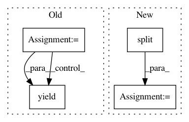

af1776b8757dd3ee1ffd19bc7ec37b3dac53d176,reporting/evaluate_predictions.py,PositionIterator,__iter__,#PositionIterator#,41
Before Change
def __iter__(self):
buffer = defaultdict(dict)
last_question = -1
question = None
for mm, pp in zip(self._meta, self._pred):
question, sent, token, guess = mm.split("\t")
question = int(question)
sent = int(sent)
token = int(token)
guess = guess.strip()
// TODO: Make sure the name matches metadata
score = float(pp.split()[0])
name = pp.split()[1]
name_q, name_s, name_t = name.split("_")
assert int(name_q) == question
assert int(name_s) == sent, "%s vs %s" % (mm, name)
assert int(name_t) == token
if last_question != question:
if last_question >= 0:
yield last_question, buffer
buffer = defaultdict(dict)
last_question = question
// Save the score and whether it was correct
After Change
token = int(token)
guess = guess.strip()
pred_split = prediction.split()
score = float(pred_split[0])
name = pred_split[1]
name_q, name_s, name_t = name.split("_")
assert int(name_q) == question
In pattern: SUPERPATTERN
Frequency: 3
Non-data size: 4
Instances
Project Name: Pinafore/qb
Commit Name: af1776b8757dd3ee1ffd19bc7ec37b3dac53d176
Time: 2016-06-25
Author: ski.rodriguez@gmail.com
File Name: reporting/evaluate_predictions.py
Class Name: PositionIterator
Method Name: __iter__
Project Name: soft-matter/trackpy
Commit Name: c6607119c25d0178245243ef3fdd3d176dd0d8f2
Time: 2020-01-22
Author: anntzer.lee@gmail.com
File Name: trackpy/linking/utils.py
Class Name:
Method Name: coords_from_df
Project Name: HazyResearch/fonduer
Commit Name: 0de3c091c75e36ffb4c12a2048110df37cafb644
Time: 2018-09-20
Author: lwhsiao@stanford.edu
File Name: src/fonduer/candidates/mentions.py
Class Name: Ngrams
Method Name: apply